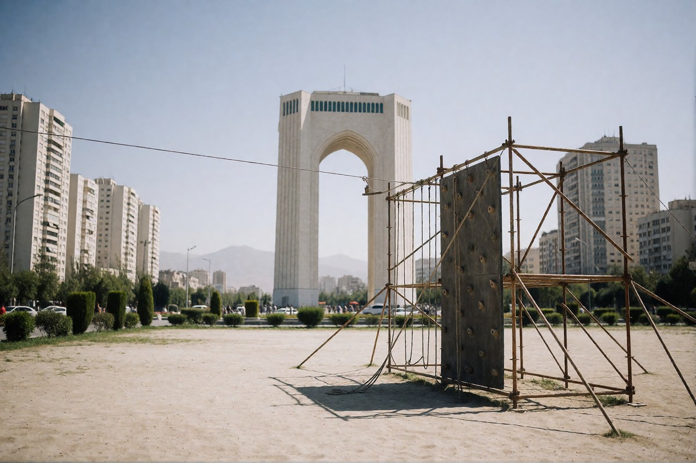

Geopolitica · 10 novembre 2026
A Teheran le donne imparano a usare i fucili d'assalto

In piazza Azadi è stato inaugurato un campo di addestramento per volontarie. Le autorità iraniane dicono che serve a prepararsi a un'invasione di terra americana. Ma un'invasione, per ora, non è sul tavolo.
di Franco Zanghì
Martedì 10 novembre 2026, in piazza Azadi, la piazza della Libertà di Teheran, è stato inaugurato un campo di addestramento militare per donne volontarie. Le fotografie dell'agenzia americana Associated Press mostrano donne armate che si calano lungo un muro e scendono appese a una teleferica.
Secondo l'agenzia LaPresse a inaugurarlo sono stati i Guardiani della Rivoluzione. Le autorità iraniane dicono che serve a preparare le volontarie a difendersi da un'eventuale invasione di terra degli Stati Uniti.
Una campagna nazionale
Non è un episodio isolato. Fa parte di una campagna che si chiama Janfada, cioè «chi sacrifica la vita», partita a fine marzo nel momento più duro della guerra con Stati Uniti e Israele.
Secondo Al Jazeera la gestiscono i Basij, la milizia dei Guardiani della Rivoluzione, con postazioni nelle piazze dove si insegna a caricare e a usare pistole e fucili. Il governo dice che si sono iscritti 33 milioni di iraniani; alcuni attivisti all'estero, che hanno esaminato il sito della campagna, ne contano meno di 4 milioni. Le due cifre si riportano entrambe perché nessuna delle due è verificabile da fuori.
Il contesto
La guerra è cominciata il 28 febbraio 2026 con l'attacco di Stati Uniti e Israele. In quei raid è stato ucciso Ali Khamenei, la Guida suprema della Repubblica islamica. A giugno è arrivata una tregua, crollata poi sul controllo dello Stretto di Hormuz, dove Washington mantiene un blocco navale sui porti iraniani del sud.
In questi giorni il presidente americano Donald Trump ha detto che l'Iran, militarmente, è «praticamente finito», e che gli Stati Uniti si limitano a mantenere lo status quo. Da Teheran ha risposto Mohsen Rezaei, segretario del Consiglio supremo di sicurezza nazionale: è ora, ha detto, di accettare le sette condizioni iraniane, dalla fine delle ostilità alla revoca del blocco e delle sanzioni. Le due frasi sono riferite da una sola testata e si attribuiscono a chi le riporta.
Un'invasione è davvero sul tavolo?
Secondo Al Jazeera, Trump l'ha finora esclusa in larga parte. E un comandante dei Guardiani della Rivoluzione, citato dalla stessa testata, spiega così lo scopo della campagna: mostrare che il popolo sta con la Repubblica islamica. Quelle immagini, insomma, parlano anche all'interno del Paese.
Perché ci riguarda
Dallo Stretto di Hormuz passa una parte decisiva del petrolio mondiale. A metà ottobre, secondo Al Jazeera, il greggio era intorno ai 104 dollari al barile, e il prezzo della benzina alla pompa segue quello.
Il passaggio da guardare sono i colloqui indiretti, con la mediazione di Pakistan e Qatar. Se ripartono, le piazze di Teheran restano una vetrina. Se si fermano, quelle esercitazioni diventano un messaggio.
Fonti
- Associated Press, galleria fotografica di Vahid Salemi sul nuovo centro di addestramento per donne in Iran, 10 novembre 2026
- LaPresse, «Iran, a Teheran inaugurato un centro di addestramento militare per donne volontarie», 11 novembre 2026
- Al Jazeera, «Iran's authorities take 'self-sacrifice' mobilisation campaign nationwide», 25 ottobre 2026
- Al Jazeera, «US-Iran stalemate: what are Trump's next military options», 15 ottobre 2026
- The Week, «US-Iran conflict effectively over, says Trump», 10 novembre 2026
Il numero degli iscritti alla campagna Janfada è dichiarato dal governo iraniano e contestato da attivisti all'estero: alla data di pubblicazione non esiste una verifica indipendente. Il prezzo del greggio citato è quello di metà ottobre 2026.